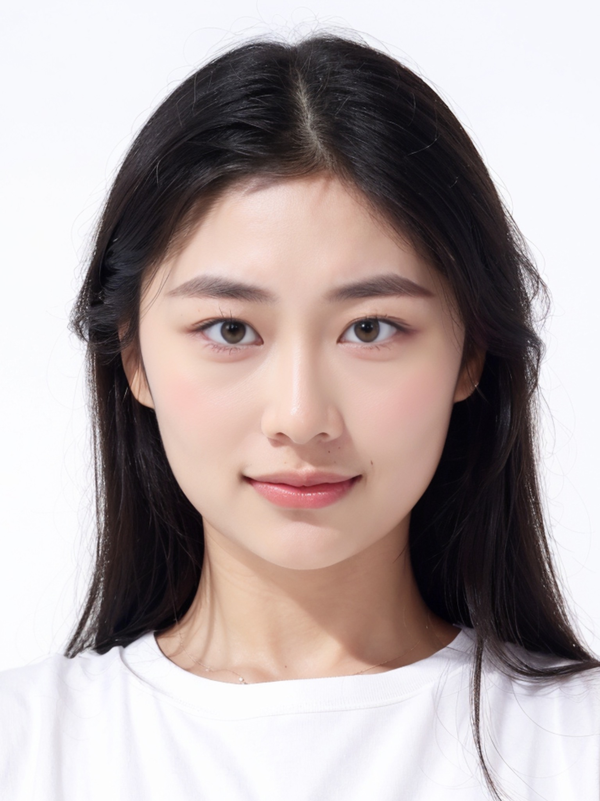
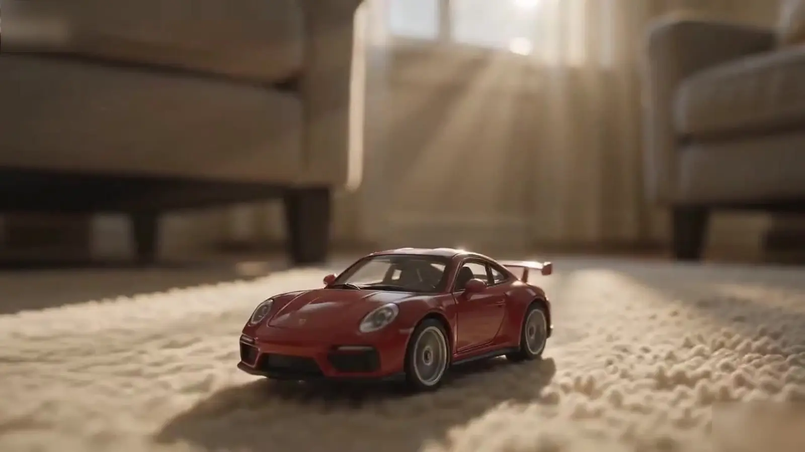

个人档案
内容策划 × 平台运营 × 执行落地
21 岁，现居广州，本科在读。对热点与平台内容敏感，能够独立完成从想法到发布的内容链路，也能在团队协作中细致推进交付。
- 院校
- 广东外语外贸大学南国商学院
- 专业
- 网络与新媒体 · 2023.09—2027.06
- 成绩
- 绩点 4.0 · 专业前 3%
2027 届 · 广州 · 市场 / 内容 / 品牌
网络与新媒体专业，拥有品牌文案、小红书矩阵和抖音账号实操经验。 擅长从选题洞察出发，完成文案脚本、内容制作与数据复盘，并用 AI 工具提升创作效率。

OPEN TO INTERNSHIP · 202601 / ABOUT
用经历和结果回答：我能为内容运营与品牌营销岗位做什么。
个人档案
21 岁，现居广州，本科在读。对热点与平台内容敏感，能够独立完成从想法到发布的内容链路，也能在团队协作中细致推进交付。
多平台内容文案、行业热点与竞品拆解、设计协同交付。
120+ 篇营销文案双账号矩阵运营、选题与图文制作、评论私信及线索承接。
89 篇内容 · 商机咨询 +200%独立完成账号定位、选题策划、拍摄剪辑与发布复盘。
最高 150W+ 播放策划落地 20+ 场校园主题活动，单场平均参与 300+ 人；跨部门协作使筹备周期缩短 20%。
2026 第 18 届大广赛省级二等奖；2025 粤港澳大学生国际广告节省级优秀奖。
英语四级（CET-4）、雅思 5.5、全国计算机一级。
02 / SELECTED WORK
点击项目，查看完整作品、创意路径与成果。
从账号定位、选题生产到互动承接与数据复盘，呈现完整运营链路。
 3 张实操截图
3 张实操截图项目细节
围绕课程信息与家长需求拆解内容，用官方账号承接品牌信息，用人设账号建立信任感。
独立完成双账号共 89 篇内容，并维护评论与私信，保障稳定更新。
官方账号有效商机咨询量提升 200%，人设账号补充私域流量池 450+。


 2 张账号截图 + 1 条视频
2 张账号截图 + 1 条视频项目细节
累计发布 40 条短视频，持续测试内容方向、标题表达与画面节奏。
单条内容最高获得 150W+ 播放和 3W+ 点赞。
直播切片完成信息提炼、口播节奏压缩、重点字幕与画面包装。

用真实发布内容与系列海报，呈现平台文案、品牌洞察和视觉表达能力。
 5 张平台截图
5 张平台截图项目细节
根据品牌语调产出小红书、公众号与短视频营销文案，并完成校对与版本迭代。
拆解行业热点和竞品案例，将洞察转化为具体选题与表达角度。
与设计团队同步内容意图、画面重点和交付节点，形成多平台素材闭环。


 3 张系列海报
3 张系列海报项目细节
从“真正的修复”提炼统一创意母题，让产品利益点从功能描述转向情绪共鸣。
用雕塑、裂纹与织物肌理对应眼周问题，建立具有收藏感的视觉陈列。
三张海报统一米色体系、构图语言和文案节奏，形成完整系列。


 3 张系列海报
3 张系列海报项目细节
选取深夜学习、旅途与通勤三个高共鸣场景，回应成长过程中的陪伴感。
通过手写感文案与暖色电影光影强化真实生活感。
统一角色露出、周年标识和视觉元素，兼顾单张传播与组图完整性。


 3 张系列海报
3 张系列海报项目细节
从红楼人物性格出发，建立人物、花卉香型与洗护产品之间的记忆连接。
采用中式留白、水墨层次与古典园林意象，形成克制统一的国风表达。
用短句文案承接人物特征与产品卖点，兼顾文化识别度和品牌露出。


把公开数据、议题判断和网页交互组合成清晰可读的新闻体验。
项目细节
整合智联招聘、教育部、国家统计局与高校就业质量报告等公开资料。
用起薪阶梯、考研人数、就业率、成本对比与四象限矩阵组织论证。
加入认知测试、滚动叙事、交互图表和结尾问卷，降低复杂数据的阅读门槛。
以完整成片展示 AI 场景生成、分镜组织、镜头衔接与后期节奏控制。

完整视频项目细节
以微缩车模为视觉钩子，通过尺度反差快速建立创意记忆点。
衔接居家空间、专业赛道与驾驶视角，保持车型、色彩和运动方向的一致。
用短镜头推进速度感，完成 33 秒横版品牌短片。
项目细节
以雪山远景建立规模感，再用滑雪动作与车辆飞跃提升视觉强度。
通过统一冷色调、光向与雪地环境维持镜头间的场景连续性。
在 30 秒内完成铺陈、加速与收束，形成适合品牌传播的超宽画幅成片。
03 / TOOLKIT
覆盖内容从洞察、创作、制作到复盘的完整链路。
平台语气与品牌调性适配
热点拆解与内容方向判断
从信息点到镜头节奏
独立完成内容制作链路
字幕、节奏与成片包装
方案、数据与交付整理
脑暴、初稿与检查辅助
账号运营与用户互动
基于表现持续优化内容